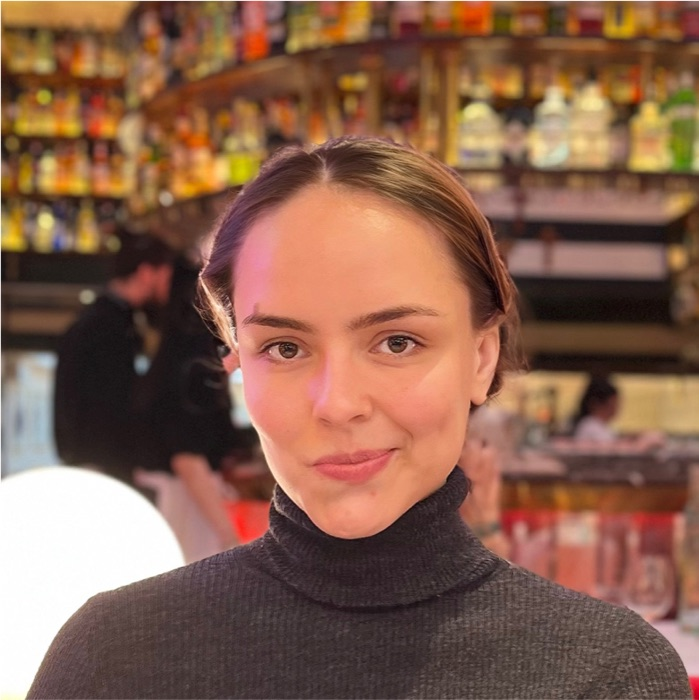
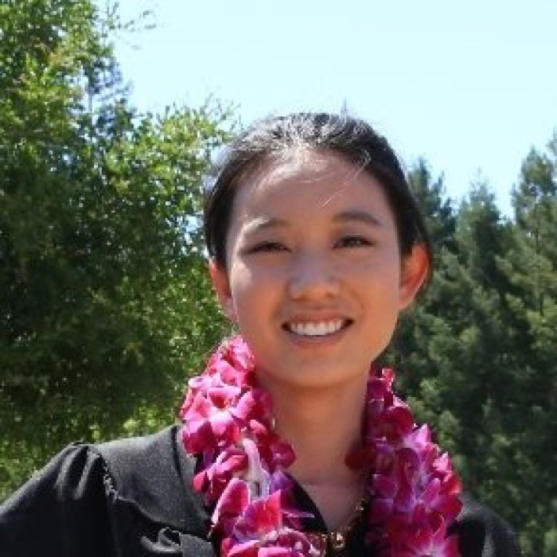

Sophia Bano
UCL, United Kingdom
Robot vision and scene understanding for minimally invasive surgery.An ECCV workshop on the data bottleneck for robust medical imaging AI.


UCL, United Kingdom
Robot vision and scene understanding for minimally invasive surgery.
DKFZ / Heidelberg University, Germany
Surgical data science, benchmarking, and reproducible evaluation.
Universidad de Zaragoza, Spain
Visual SLAM, deformable SLAM for endoscopy, EndoMapper.
CUHK, Hong Kong
Medical AI across MICCAI, IPCAI, and ICRA.
Primary contact | Intuitive Surgical

iMED dataset lead | UCL Hawkes Institute
Profile

CLiMB2026 lead | Universidad de Zaragoza
Profile
SurgVU Challenge organizer | Intuitive Surgical

Vision system analyst | Intuitive Surgical

Computer Vision & Medical Imaging engineer | Intuitive Surgical

Research Scientist | Intuitive Surgical
Machine learning engineer | Intuitive Surgical
 Featured advisor
Featured advisor
NCT Dresden professor working on surgical data science, computer-assisted surgery, robotic vision, and AI-enabled clinical translation.
ProfileInvited speakerUCL researcher focused on robot vision and scene understanding for minimally invasive surgery.
Invited speakerDKFZ and Heidelberg University researcher in surgical data science, benchmarking, and reproducible evaluation.
Invited speakerUniversidad de Zaragoza researcher known for visual SLAM, deformable SLAM for endoscopy, and EndoMapper.
Invited speakerChinese University of Hong Kong researcher working on medical AI across clinical and surgical applications.
UCL Professor of Robot Vision, Co-Director of the UCL Hawkes Institute, and Royal Academy of Engineering Chair in Emerging Technologies.
ProfileIntuitive Surgical computer vision and machine learning engineer focused on surgical robotics, instrument perception, and AI-enabled clinical decision support.
ProfilePurdue Research Assistant Professor of Biomedical Engineering working at the intersection of surgery, data science, medical image analysis, and clinical translation.
ProfileMulti-Endoscope Dataset for 3D Perception
iMED2026 is a MICCAI/EndoVis challenge on synchronized multi-endoscope data, with relative pose estimation and deformable novel view synthesis tracks for endoscopic 3D perception.
Challenge siteColonoscopy Localization and Mapping Benchmark
CLiMB2026 is an unpublished benchmark under development for colonoscopy localization and mapping. Public dataset access, paper details, and benchmark statistics will be added after organizer review.
Surgical Visual Understanding Dataset Series
SurgVU focuses on large-scale surgical video understanding. DCA-MI highlights it as a dataset case study for real-world video curation and evaluation.
arXiv:2501.09209Multi-Endoscope Dataset for 3D Perception
iMED2026 is a MICCAI/EndoVis challenge on synchronized multi-endoscope data, with relative pose estimation and deformable novel view synthesis tracks for endoscopic 3D perception.
Challenge siteColonoscopy Localization and Mapping Benchmark
CLiMB2026 is an unpublished benchmark under development for colonoscopy localization and mapping. Public dataset access, paper details, and benchmark statistics will be added after organizer review.
Surgical Visual Understanding Dataset Series
SurgVU focuses on large-scale surgical video understanding. DCA-MI highlights it as a dataset case study for real-world video curation and evaluation.
arXiv:2501.09209Full papers in ECCV LNCS format. All submissions are reviewed via a standard double-blind OpenReview workflow by a dedicated program committee. Conflicts of interest are handled per ECCV workshop policies. Accepted papers are included in the workshop program for poster presentation.
Full papers, extended abstracts, and dataset or benchmark papers are welcome.
Papers already published and peer-reviewed at major computer vision, machine learning, medical imaging, robotics, or clinical AI conferences or journals. Submissions are not re-reviewed — the main criteria are topical fit and poster-board availability. Authors submit a link to the paper via the workshop’s OpenReview page.
Original Work: ECCV 2026 LNCS author kit — max. 14 pages excluding references (figures and tables included). Additional reference-only pages are allowed. Use the 2026 template, not CVPR or older ECCV kits. See the ECCV submission policies.
Published Work: no reformatting — submit the camera-ready version as published at the original venue, plus a link on OpenReview.
Follow the ECCV 2026 submission policies — double-blind anonymization, no author-identifying links, dual-submission rules, and completed OpenReview profiles.
Original Work: double-blind peer review via OpenReview, one round, no rebuttal. Published Work: topical-fit screening only, not re-reviewed.
Poster presentation at DCA-MI 2026. A subset of Original Work papers may be invited for oral presentation.
Document source, consent, licensing, and coverage limits. Submissions with unclear protected-data handling may be desk-rejected.
Primary contact | Intuitive Surgical
iMED dataset lead | UCL Hawkes Institute
Profile
CLiMB2026 lead | Universidad de Zaragoza
Profile
Machine Learning Engineer at Intuitive Surgical and primary organizer of the SurgVU Challenge at MICCAI 2026. He is also the primary author of SurgiSR4K, the first 4K surgical imaging and video dataset. He holds graduate degrees in Robotics and Computer Science from Johns Hopkins University and has extensive experience in computer vision, video analysis, and vision-language models for medical applications.
Vision system analyst at Intuitive Surgical. Her research interests are in computational imaging, specifically the joint design of optics and image processing. She has published in venues such as PNAS, Nature Communications, and CVPR.
Computer Vision & Medical Imaging engineer at Intuitive Surgical, specializing in advanced imaging and robotic-assisted procedures. CMU Robotics Institute alumnus; presenter and reviewer across IEEE TRO, IROS, CVPR, and ICML.
shuoqi.chen@intusurg.com
Research Scientist | Intuitive Surgical
Machine Learning Engineer at Intuitive Surgical, working at the crossroads of surgical data science and AI. His research focuses on real-time surgical guidance and surgeon skill assessment for eye surgery and robot-assisted procedures using multiple data modalities, including image, kinematics, and visual attention, through computer vision and deep learning. His interests also include the investigation of biased datasets in the surgical field.
Featured advisor
Professor for Translational Surgical Oncology at NCT Dresden, working on surgical data science, computer-assisted surgery, robotic vision, and AI-enabled clinical translation.
Profile
Robot vision
UCL researcher focused on robot vision and scene understanding for minimally invasive surgery.
Profile
Surgical data science
DKFZ and Heidelberg University researcher in surgical data science, benchmarking, and reproducible evaluation in medical AI.
Profile
Visual SLAM
Universidad de Zaragoza researcher known for visual SLAM, ORB-SLAM, deformable SLAM for endoscopy, and the EndoMapper dataset.
Profile
Medical AI
Chinese University of Hong Kong researcher working on medical AI across clinical and surgical applications, with recent work across MICCAI, IPCAI, and ICRA.
ProfileUCL Professor of Robot Vision, Co-Director of the UCL Hawkes Institute, and Royal Academy of Engineering Chair in Emerging Technologies, focused on surgical robotics and AI for minimally invasive interventions.
ProfileIntuitive Surgical computer vision and machine learning engineer working on AI-enabled clinical decision support, surgical robotics, and instrument perception for the da Vinci platform.
ProfilePurdue Research Assistant Professor of Biomedical Engineering and surgical data science researcher focused on medical image analysis, surgical oncology, and clinical translation.
Profile